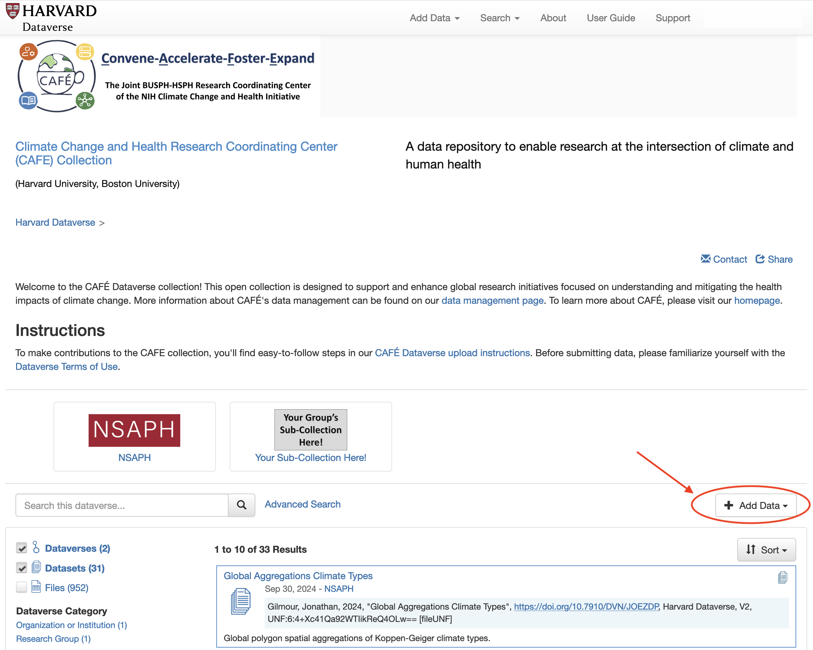
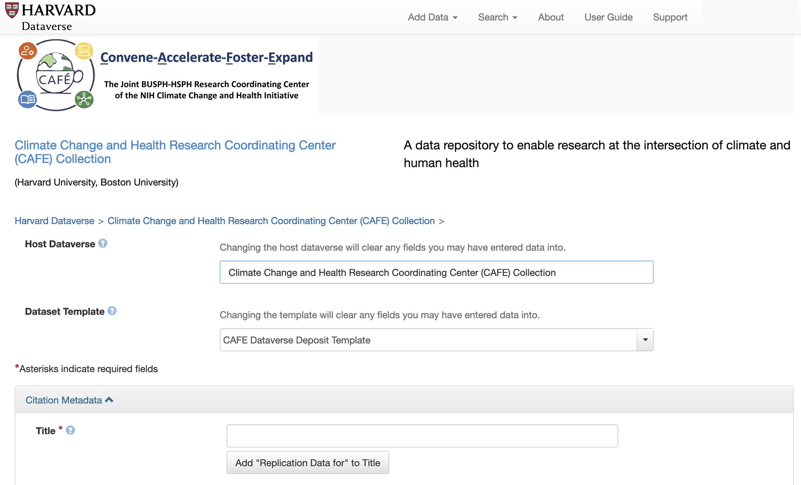

Contributing to the Climate-Health CAFÉ Dataverse Collection#
Guidelines for Dataset Contributions#
We strongly encourage the community of practice to contribute to the expansion of the CAFE Dataverse Collection. Emphasizing open access and collaborative research, the CAFE Collection invites contributions from a diverse array of stakeholders, including government agencies, NGOs, community-based organizations, industry partners, and academics.
Parameters for what datasets are appropriate and inappropriate for the CAFE Collection are described below:
General Guidance#
Contributions should be relevant to climate and health research.
The submission of processed derivatives or expansions of data accessible through existing sharing resources (ie: SEDAC, Google Earth Engine) are encouraged.
Contributions should be in line with the licensing of raw source data.
Data contributors should only post data that they own, have generated, or have been granted permission to reshare for increased accessibility (ie: census data).
If you are uploading raw source data for easier accessibility to the climate and health community, please note this in the Title and Description
No restricted access data (ie: data including personal identifying information) should be shared through the CAFE Collection. Contributions will be widely accessible to Harvard Dataverse users.
File Formatting and Size Limitations#
All file types are supported for upload and download
A maximum of 1,000 files are allowed per upload
The file upload limit is 300 GB per file
Dataverse can ingest data in certain formats as specifically as tabular data, which will allow for exploration and manipulation of the data with external tools. Tabular file ingest is limited to 143.1MB. For more information, see: Dataverse Tabular Data File Guide
Adding to a Sub-Collection#
The CAFE Collection provides infrastructure for organizing entries called sub-collections. A sub-collection is a great way to keep your lab or organization’s uploaded datasets together in one place while still being a part of the CAFE Collection. For an example, see the NSAPH sub-collection.
If you would like to have a sub-collection within the CAFE Collection, please submit the Request Form for CAFÉ Sub-Collection with details of your project, department, organization, or publication. Please note that subcollections are meant to organize data from specific contributors and teams, not based on topics and themes. Data users can find data under specific themes and research topics by using the search functions, so long as your contribution has included the relevant keywords, controlled vocabulary, and other relevant metadata. The next section describes these metadata in more depth.
Harvard Dataverse Repository Tutorial#
This tutorial provides step-by-step instructions on how to upload data to the Climate Change and Health Research Coordinating Center (CAFE) Collection within the Harvard Dataverse Repository.
Click below to view a tutorial video on uploading to the Harvard Dataverse CAFE Collection.
Prerequisites#
Before you begin, ensure you have the necessary data files, github links, and information ready for upload.
Steps#
Log In or Create an Account
If you haven’t already, visit the Climate Change and Health Research Coordinating Center (CAFE) Collection and either log in to your existing account or create a new one.
Select “Add Data” from the CAFE Dataverse Collection page
You will add your contribution starting from the CAFE Collection page on Dataverse.
From the main Dataverse landing page, you can find the CAFE Collection by using the Search function at the top of the page.
Once you have arrived to the CAFE Collection, find the “Add Data” button by scrolling down the page. You will find “Add Data” right above the list of all datasets in the Collection. Note that there is an “Add Data” button at the top that will not automatically deposit your data to the CAFE Collection.

Select “Add Data” and then “New Dataset” to start your contribution.
Before filling out the required metadata, confirm that you are contributing to the CAFE Collection by ensuring the Host Dataverse is “Climate Change and Health Research Coordinating Center (CAFE) Collection” and the Dataset Template is “CAFE Dataverse Deposit Template”

Fill in Dataset Information Please follow the prompts provided in the Metadata checklist to provide the descriptors required to make your dataset available through Dataverse. Some context-specific instructions have been added to the upload form, and you can additionally find field-specific explanations for each field by hovering your cursor over the question-mark icon next to the entry. For additional clarity, we have highlighted directions for a few key fields that may be unfamiliar to users:
Keywords and Controlled Vocabulary: Add keywords to aid in discoverability. Controlled vocabulary is used to ensure keywords are consistent across different data contributors. NIEHS has established a glossary of keywords that CAFE data contributors are expected to use. Select keywords relevant to your data from the Climate Change and Human Health Glossary. The Controlled Vocabulary Name can be left blank in the metadata, but the glossary link should be included in the URL section. This URL should appear as a default. If you would like to include keywords from another glossary, follow the same procedure using the + button to add new keywords and including the relevant URL for each.
Geospatial Metadata. Provide information about the area(s) that your data covers as directed by the checklist prompts.
Computational Workflow: Open source processing is a priority for reproducibility. Refer to the Code Sharing Walkthrough page for details on the expectations for processing pipelines. Include a link to your processing pipeline (ie:GitHub) if applicable.
Metadata About Data Sources: Include all available information about any raw data source from which the dataset was derived (Select Yes from the Derived from Another Dataset option before completing this section).
Metadata About Geospatial Files: These details are relevant strictly for spatial file formats.
Extracted Data Uploads: If you are uploading data with minimal modification (ie: subset of variable, re-structured JSON files, etc.) extracted from already available source data, please add the data to the “Extracted Data Contributions” subcollection. Please include the below information to ensure that the original dataset source is properly cited[:
In the Citation Metadata - Title field, include “Extracted Data from: “ followed by the source dataset title.
If you had made subsets of a source dataset (ie: selecting subset of variables, specific geographic area, etc.), these should be noted in the title and description.
Include any available metadata, related publications, and other information available from the source data website.
In the Citation Metadata - Description and Notes, please include language indicating: “This submission includes publicly available data extracted in its original form. Please reference the Related Publication listed here for source and citation information.”
Include all information in the Metadata About Data Sources that is available, including version numbers, institutions, DOI/URL, Date Obtained, Attribution, and Disclaimer.
Thoroughly review any relevant licensing to ensure extraction and posting of data is permitted
You will only see a field for Data Type in the Citation Metadata after you go back to edit the dataset. Please write “Source Data” to indicate this is reposted data available elsewhere.
Upload Data Files
The last component of the dataset submission involves uploading your data and code (if not using online computational workflow). You can select or upload files, specify their naming, and specify a folder infrastructure if needed.
Click the “Select Files to Add” button to choose files from your local device or drag and drop files into the upload widget. In addition to the metadata specified in this form, a .csv data dictionary describing all variables should be uploaded as a file with your submission.
Note: Dataverse supports a wide range of file types. Ensure your files are within the specified size limits.
Save Initial Metadata
Select Save Dataset when all fields are filled and you have added the files you would like to submit.
Edit Metadata
After you have saved your dataset, edit the metadata to add additional information by selecting Edit Dataset
Please note that there are several metadata fields that will only appear after you have saved the initial metadata and gone back to Edit.
When editing your metadata, please fill out as much detail as possible. We especially encourage inclusion of:
Time Period
Data Type
Software
All relevant Geospatial Metadata fields
Submit
Once you’re satisfied with the dataset and metadata, click the “Submit for Review” button.
Congratulations! You’ve successfully uploaded your data to the Harvard Dataverse Repository under the “Climate Change and Health Research Coordinating Center (CAFE) Collection” organization. Your dataset is now being reviewed for collaboration, sharing, and archiving within the CAFE Collection.